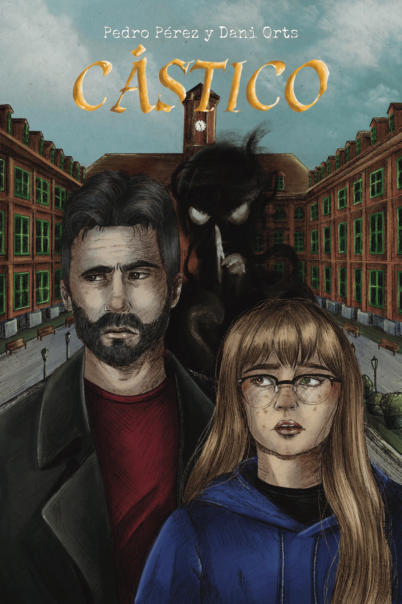

Sobre Mí
Pedro Pérez Hernández inició su recorrido como autor con la autopublicación de Cástico en 2024, una primera obra de la que extrajo oficio y experiencia. Su escritura se caracteriza por una prosa seca, precisa y sin ornamento, centrada en el personaje y el conflicto.
Obras

Cástico
2024 · Autopublicación · Thriller de misterio
Coescrita con Dani Orts Garcías
Alberto, un profesor de treinta y seis años, y Sofía, una adolescente de quince, quedan vinculados por la investigación de un suceso trágico ocurrido en un instituto. A partir de ahí, la ciudad de Cástico se convierte en el escenario de un thriller de misterio que termina afectando de lleno a sus vidas.
Ver Obra